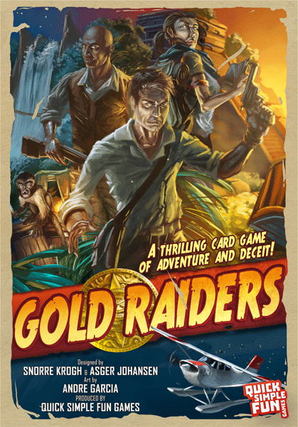
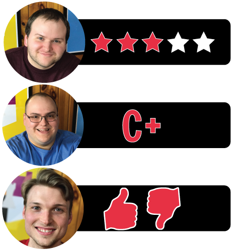

This week, Board Crazy reviews Gold Raiders, a board game designed by Snorre Krogh and Asger Johansen and published by Quick Simple Fun Games. Gold Raiders is an adventure game where you’re trying to get to the temple before anyone else so that you can claim the treasure. Be careful – you can’t trust anyone… Keep reading to see our thoughts on Gold Raiders!

D reviews Gold Raiders
 (Author’s
note: this review is meant to accompany our gameplay video and will not
go in-depth on the game’s rules. If you’re interested in learning how
the game is played, please watch the video. It’s not bad.)
(Author’s
note: this review is meant to accompany our gameplay video and will not
go in-depth on the game’s rules. If you’re interested in learning how
the game is played, please watch the video. It’s not bad.)
The Steal Card – this card allows you steal an opponent’s stack.
Gold Raiders is the newest game released by Quick Simple Fun Games, and if nothing else, it mostly lives up to its publisher’s name. It definitely nails the simple part, and I don’t mean that as an insult. It took me about fifteen minutes to completely understand the rules of the game, and about another fifteen to relay those rules to the other two, who grasped it without much difficulty. The game’s inherit strategies are also quite intuitive – it only took one round, without any prior knowledge of the game, for us to figure out what the advantageous plays are. There obviously isn’t a ton of depth to Gold Raiders, but given the overall simplicity of the package, I think it gives the players just enough to think about.
In regards to the “quick” part of the equation, I think you could reasonably categorize Gold Raiders thus, at least with a lower player count. Our playthrough probably clocked in at about 45 minutes, which is a reasonable duration. This is purely an assumption, but I imagine a game with five or six skilled players could easy go longer than an hour. Perhaps the greater degree of chaos would lead to a quicker victory, but the amount of time spent thinking would certainly increase. Regardless, I didn’t feel like the game wore out its welcome before we finished.
“Fun” is, of course, the big one. Is Gold Raiders fun? None of the above would really matter much if it isn’t. Fortunately, I would say that Gold Raiders is pretty fun, at least if you’re the type of person that enjoys messing with their friends. And you also need to know what you’re getting into in order to have a good time. There is a high degree of randomness and luck involved, so the fun of Gold Raiders is of a pretty relaxed variety. If you’re the type of person who always takes board games very seriously, this may not be one for you.
Andre Garcia does a good job of evoking pulpy adventure novels and movies.
The components are sort of a mixed bag. It may or may not be in the video, but the game box is actually quite difficult to open, even with two, fully functional hands. This isn’t the end of the world for me, but it’s sort of odd and might be an issue for someone with a disability. The cards, board, and game pieces are all fine, but nothing’s outstanding. I will give some props to the art of Andre Garcia, though, which does a good job evoking the pulpy adventure novels and movies that clearly inspired the game’s theme.
Overall, Gold Raiders is a solid but not outstanding game. I would recommend it for small groups of close friends that don’t mind some casual backstabbing and are looking for a bit of quick fun.
D’s Rating: Three Stars out of Five.
Will reviews Gold Raiders
 When
it comes to theme, the adventure genre is up there with my favorites.
Whether it’s Indiana Jones or the Uncharted series, I honestly can’t get
enough of it. So when I saw that there was a tabletop game coming out
that embraced simple mechanics, featured an adventure theme, and was
titled “Gold Raiders”, I instantly became excited. That excitement
lasted until the end of our first session of Gold Raiders, when I
realized that the game I had anticipated so much was decent, but nothing
to write home about. The core gameplay is very fun and occasionally
hilarious, but it simultaneously feels half-baked, as if the designers
were hesitant to expand on their first draft.
When
it comes to theme, the adventure genre is up there with my favorites.
Whether it’s Indiana Jones or the Uncharted series, I honestly can’t get
enough of it. So when I saw that there was a tabletop game coming out
that embraced simple mechanics, featured an adventure theme, and was
titled “Gold Raiders”, I instantly became excited. That excitement
lasted until the end of our first session of Gold Raiders, when I
realized that the game I had anticipated so much was decent, but nothing
to write home about. The core gameplay is very fun and occasionally
hilarious, but it simultaneously feels half-baked, as if the designers
were hesitant to expand on their first draft.
Everything that comes in the Gold Raiders game box!
Given that this game is published by Quick Simple Fun Games, it should come as no surprise that Gold Raiders’ gameplay is mostly that – quick, simple, and fun. To start, the game is indeed “quick”, but how quick depends on the size of the group that’s playing. Three to four players might be able to complete a session in 30-40 minutes, but I could see five or six player games cresting into the 60+ minute area. A lot of that has to do with the “simple” gameplay, which actually involves a good deal of thought and strategy, which means time will be spent between turns. The basic concept of Gold Raiders’ gameplay is that you build decks of cards that determine your movement on the board. Consecutive cards or sets of cards move you forward, while “Bandit” cards move you backwards. All of that is very easy to grasp, but there are a few caveats in the rules that aren’t so “simple”.
For instance, once a card is placed, it’s the player’s responsibility to remember where they put it, since decks are positioned face down and cannot be observed after they’re put in play. This means a lot of time will be put into remembering the contents of the decks you just built. Again, Gold Raiders really isn’t as “quick” as you’d expect. Still, I enjoy this element of the gameplay as it contributes to the best moment of all, the Steal. Players have a chance of getting Steal Cards, which allow them to purloin a deck of another player. Again, since the contents of a deck are secret, taking someone else’s deck is a big risk. Did they stick a Bandit in that deck, or two, or three? Revealing a sabotaged deck is frustrating but hilarious, and when you’re responsible for the deck being sabotaged, it’s even better. Without a doubt, this part of the gameplay is the best – it’s genuinely “fun” and guaranteed to put a smile on your face.
The Bandit Card – this card forces the player who reveals it to move back two spots.
So while they have “quick”, “simple”, and “fun” covered, the designers still forgot to polish the overall experience. A good example of this is the rulebook, which does effectively explain most of the gameplay, but not all of it. For instance, the rulebook provides you with the means of determining the first player to act, but then fails to specify if the first player token is supposed to move and in what direction it should be passed. This is a forgivable oversight, but then again, it’s so obvious to include such instruction that omitting it feels bizarre. It’s also really important, as going first in Gold Raiders is actually a big disadvantage. Another drawback of the gameplay is its over reliance on luck, which usually doesn’t bother me that much. Unlike my colleagues, I actually enjoy luck-based games, but Gold Raiders didn’t balance it quite right. It’s really difficult to express what I mean here, but to elaborate, a session of Gold Raiders can swing from one player’s favor to another player’s favor in an instant. And this can happen every round, regardless of how sound a player’s strategy might be, to the extent that one gets the feeling they no longer have much control over the game. I don’t know for sure how to fix this, but perhaps a re-balancing of the cards (adding a few more recons and steals) would do the job.
Before I conclude, there are a number of things that I liked and disliked that I didn’t want to touch on in detail. For example, the components are sturdy and the artwork is appealing. On the other hand, the box has a glossy finish that makes it difficult to open, which was a strange design decision. Regardless of these nitpicks, I honestly enjoyed my time with Gold Raiders, but I still walked away feeling disappointed. It wasn’t the rulebook omissions or the emphasis on luck that left me feeling that way; it was the game’s lack of dedication to its theme. I wanted to go on an adventure and feel the wonder of discovery, but in the end, the game is just a race to the finish. The adventure in between ends up mattering very little, and I couldn’t help but to think that any theme could’ve been tacked onto this gameplay and it would’ve worked just fine. It’s a shame because I think the designers were onto something, but perhaps in their endeavor to create a “quick”, “simple”, “fun” game, they forgot to make a satisfying one.
I give Gold Raiders a: C+
Graham reviews Gold Raiders
 As
you would expect, Quick Simple Fun Games newest release, Gold Raiders,
is a pretty quick, simple, and fun adventure game. In this game, you
take on the role of a raider trying to reach the temple before your
opponents do in order to collect the treasures inside.
As
you would expect, Quick Simple Fun Games newest release, Gold Raiders,
is a pretty quick, simple, and fun adventure game. In this game, you
take on the role of a raider trying to reach the temple before your
opponents do in order to collect the treasures inside.
An example set of travel cards. A set can either be a 3-of-a-kind or 3 cards in row, as shown.
Gold Raiders really is quick and easy to learn. I won’t go into detail, so for more, check out our playthrough of Gold Raiders here. The gist of is this – there are two phases, and in the first phase, you place “stacks” of cards face down in front of you that can be revealed during the second phase. In these stacks, you try to combine sets of travel cards that can ultimately move your raider closer to the temple. However, your opponents are allowed to peak at or steal your stacks, if they have the proper cards. When everyone has placed all of their cards, you move onto the second phase. In this phase, each player can choose to reveal or discard their stacks of cards.
The enjoyment of Gold Raiders comes from trying to deceive your opponents. For example, you might build a stack with a set of travel cards. If your opponent uses a recon card and picks that stack to look at, then they’ll know that you have a good stack and might try to steal it with their next turn. To trick them, you might place a bandit card on that stack. These bandit cards cancel any travel cards and move the “revealer’s” piece back two spaces (per card). So now if your opponent steals that stack and reveals it, they have actually ended up hurting themselves. But maybe you want to be even trickier and instead of putting down a bandit card, you put down another travel card. Then, your opponent might be deterred from stealing that stack of cards because of the chance that you placed a bandit on that deck. As you can see, the strategy of Gold Raiders is all about deceiving the other players and trying to get them to make a mistake. Unfortunately, that’s about as in depth as the game gets.
The game board – it really is quite simple.
I think the biggest issue with Gold Raiders is that there just isn’t much reason to come back to it. It’s easy and enjoyable, but it doesn’t play as quickly as you would think, and there isn’t much that adds to replayibility. I know some games typically don’t work too well with fewer people, like Avalon and Tortuga 1667, but with Gold Raiders, I predict anymore people would just slow the game down even more. I would definitely recommend this game for people that want a lighter gaming experience or are playing with kids, but there’s just not enough here for me to really enjoy this game for years to come. Maybe in several years when I have kids I’ll come back to it, but for now I’ll leave it on the shelf. I give Gold Raiders one thumb up and one thumb down.

Leave a Reply
You must be logged in to post a comment.